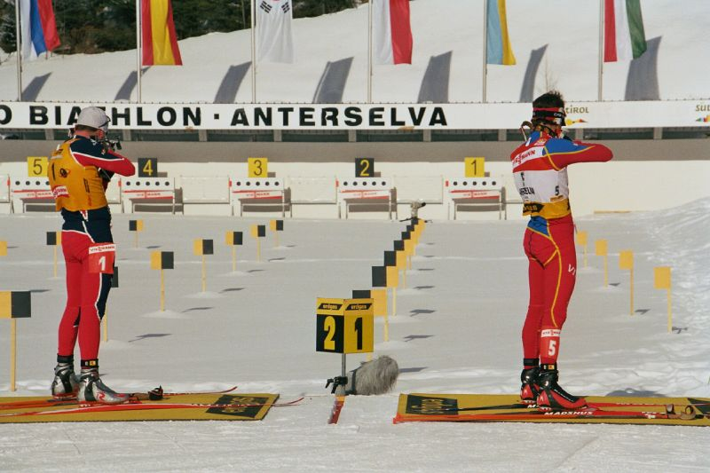

Биатло́н — зимний олимпийский вид спорта, сочетающий лыжные гонки со стрельбой из винтовки. C 1994 года официальные международные соревнования по биатлону, включая Кубок мира и чемпионаты мира, проходят под эгидой Международного союза биатлонистов.
Прародителем биатлона считаются соревнования военных патрулей — вид спорта, правила проведения которого напоминают современную биатлонную командную гонку. На сегодня существует много разновидностей биатлона.
Охота на лыжах издавна являлась частью быта многих северных народов. Однако рассматривать эту деятельность как некое подобие спортивных состязаний начали лишь с XVIII века. Первые официальные соревнования, отдалённо напоминавшие биатлон, прошли в 1768 году. Их организовали пограничники на шведско-норвежской границе. Несмотря на столь раннее зарождение, биатлон не получил распространения в других странах. Впервые на крупных международных соревнованиях состязания, напоминавшие современный биатлон, были включены в 1924 году на I зимних Олимпийских играх во французском Шамони. Назывались они «соревнования военных патрулей» (в некоторых источниках упоминаются также как «гонки военных патрулей») и проходили как демонстрационные состязания (хотя позже их участникам официально были вручены медали). В статусе демонстрационных состязаний соревнования военных патрулей позже были представлены на зимних Олимпиадах 1928, 1936 и 1948 годов, после чего их исключили из официального календаря в связи с нараставшими пацифистскими настроениями в мире по окончании Второй мировой войны.

3 августа 1948 года была создана Международная федерация современного пятиборья (фр. Union internationale de pentathlon moderne, UIPM — УИПМ), которая с 1953 года начала курировать биатлон. В 1954 году Международный олимпийский комитет признал биатлон как вид спорта. В 1957 году УИПМ в Стокгольме объявляет себя ответственной за проведение зимних биатлонных соревнований. Уже в следующем 1958 году проходит первое крупное международное биатлонное соревнование — чемпионат мира в австрийском Зальфельдене[1]. Через два года биатлон включается в официальную программу зимних Олимпийских игр. В 1967 году впервые на чемпионате мира начали соревноваться юниоры (в том же месте, что и взрослые). С 1978 года начинается также история Кубка мира. Первоначально соревнования включали в себя лишь мужские гонки. Начиная с 1983 года женщины начинают соревноваться в Кубке Европы (ныне — Кубок IBU), а на следующий год проводится первый женский Чемпионат мира во французском Шамони. С сезона 1987/1988 женские дисциплины включаются в календарь Кубка мира, а со следующего сезона мужские дисциплины появляются в календаре Кубка Европы. В том же году Международный олимпийский комитет принимает решение включить женские дисциплины в программу зимних Олимпийских игр 1992 года во французском Альбервиле.
30 ноября 1992 года во французском городе Амели-ле-Бен-Палальда было принято решение об отделении биатлона от современного пятиборья. 2 июля 1993 года в Лондоне на Чрезвычайном конгрессе Международной федерации современного пятиборья и биатлона было официально объявлено о создании Международного союза биатлонистов, курируемого вышеназванной Федерацией. 12 декабря того же года в Зальцбурге начала свою работу штаб-квартира новой международной организации. С отделением биатлона от современного пятиборья началось расширение формата соревнований. В 1994 году в финском Контиолахти прошёл первый чемпионат Европы, через два года — первые крупные международные соревнования по летнему биатлону — чемпионат мира в австрийском Хохфильцене. 26—28 июня 1998 года проходил Третий регулярный конгресс Международного союза биатлонистов, на котором было принято решение окончательно отделиться от Международной федерации современного пятиборья и биатлона.
 Больше информации про биатлон!
Больше информации про биатлон!